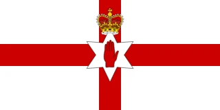

1. The Birth of Pelé – Football’s Greatest Prodigy
The 1958 FIFA World Cup in Sweden was a tournament filled with unforgettable moments, but none were as defining as the emergence of a 17-year-old boy from Brazil named Pelé. When the tournament began, few outside Brazil had even heard of him, but by the end, he was a world champion and had forever changed the course of football history. His performances—particularly in the knockout rounds—were nothing short of miraculous, and his name would soon be spoken with the same reverence as the greatest footballers of all time.
Pelé’s Journey to the World Cup
Born Edson Arantes do Nascimento in Três Corações, Brazil, in 1940, Pelé grew up in poverty, playing football barefoot in the streets. His talent was undeniable from a young age, and by his mid-teens, he was already a star for Santos FC, one of Brazil’s top clubs.
At just 16 years old, he was called up to the Brazilian national team. His inclusion in the 1958 World Cup squad raised eyebrows—many thought he was too young and inexperienced for football’s biggest stage. He even missed Brazil’s first two group-stage matches due to injury, leaving many to wonder whether he would even get the chance to play.
But when he finally took the field, the world witnessed something truly special.
The Quarterfinal: The Youngest World Cup Goal Scorer
Pelé made his World Cup debut in the final group-stage match against the Soviet Union, but it was in the quarterfinals against Wales that his legend truly began. Brazil struggled to break down the Welsh defense, which was determined to keep the game tight. The match remained goalless deep into the second half, and Brazil’s attacking stars, including Garrincha and Vavá, were struggling to find a way through.
Then, in the 66th minute, Pelé produced a moment of pure genius. Receiving the ball inside the penalty area with his back to goal, he controlled it, flicked it over a defender, and volleyed it into the net—all in one fluid motion. It was a goal that defied his age, showing intelligence, skill, and composure far beyond his years.
That goal not only won the match for Brazil (1-0) but also made Pelé the youngest player to ever score in a World Cup at just 17 years and 239 days old—a record that still stands today.
The Semifinal: A Historic Hat-Trick Against France
After his heroics against Wales, Pelé faced his toughest challenge yet—a semifinal clash against a powerful French team led by Just Fontaine, who was in unstoppable form. France had scored 15 goals in four matches, and Fontaine would eventually finish the tournament with a record 13 goals, the most ever in a single World Cup.
But this was Pelé’s tournament now.
The game started as a thrilling contest, with both teams attacking with relentless intensity. Brazil took an early lead, but France quickly equalized, showing they would not go down without a fight. However, in the second half, Pelé took over, delivering one of the greatest performances in World Cup history.
• He scored three sensational goals, becoming the youngest player to score a World Cup hat-trick.
• His first goal came after a brilliant dribble past two defenders, followed by a cool finish.
• His second and third goals showcased his flair, movement, and ruthless finishing ability.
Brazil ran out 5-2 winners, and Pelé had announced himself to the world in spectacular fashion.
The Final: A Star is Born
Brazil had reached their second-ever World Cup final, facing host nation Sweden, who had been impressive throughout the tournament. Over 50,000 fans packed the stadium in Stockholm, hoping to see Sweden lift their first World Cup.
The match started poorly for Brazil, as Sweden scored in the 4th minute, taking an early lead. But Brazil quickly responded, with Vavá scoring twice to turn the game around. Then, in the 55th minute, Pelé produced one of the greatest goals ever scored in a World Cup final.
• He received a high cross inside the Swedish penalty area.
• With a defender closing in, he flicked the ball over his opponent’s head with his first touch.
• Before the ball even hit the ground, he volleyed it past the helpless goalkeeper into the net.
It was a moment of pure magic—a goal that only a genius could score. The Swedish crowd, despite supporting their own team, stood up and applauded.
Pelé wasn’t finished. In the 90th minute, he scored his second goal with a powerful header, sealing Brazil’s 5-2 victory and their first-ever World Cup title. As the final whistle blew, the 17-year-old collapsed to the ground in tears, overwhelmed by emotion.
The Aftermath: A Legend is Born
Pelé had not only led Brazil to their first World Cup victory but had done so in a way no one had ever seen before. His six goals in four knockout matches were legendary, and his skills, flair, and maturity stunned the world.
• He became the youngest player to ever win a World Cup.
• His two goals in the final made him the youngest player to score in a World Cup final.
• His overall performances earned him the nickname “O Rei” (The King).
After the tournament, Pelé was greeted in Brazil as a national hero. Over the next two decades, he would dominate world football, winning two more World Cups (1962 and 1970) and becoming arguably the greatest footballer of all time.
But it all started in Sweden, in 1958, when a 17-year-old boy changed the game forever.

2. Just Fontaine – The Greatest Goal-Scoring Feat Ever
The 1958 FIFA World Cup in Sweden was filled with unforgettable moments, but few were as remarkable as the record-breaking goal-scoring exploits of Just Fontaine. The French striker scored an astonishing 13 goals in just six matches, setting a World Cup record that still stands today. It was a feat of ruthless finishing, consistency, and brilliance, propelling Fontaine into football immortality.
Despite France not winning the tournament, Fontaine’s goal-scoring exploits overshadowed nearly everything else, making him one of the most celebrated players of the World Cup. His record has stood the test of time—no player, not even Pelé, Ronaldo, or Messi, has come close to matching it.
A Forgotten Star Steps into the Spotlight
Before the 1958 World Cup, Just Fontaine was not considered one of the world's best strikers. In fact, he wasn’t even supposed to be France’s first-choice forward. The team’s star striker, Thadée Cisowski, was injured just before the tournament, forcing France to turn to Fontaine. What followed was one of the most extraordinary individual performances in World Cup history.
Born in Marrakech, Morocco (then part of French colonial rule), Fontaine had built a solid reputation playing for Stade de Reims in France’s top division. He had a keen eye for goal, but nobody expected him to tear through the World Cup the way he did.
Group Stage: A Dream Start
From the very first match, Fontaine showed he was in unstoppable form. France’s opening game was against Paraguay, and Fontaine announced himself with a stunning hat-trick, leading his side to a 7-3 victory.
• His goals showcased his clinical finishing, smart movement, and ability to score under pressure.
• Many of his finishes were one-touch strikes, emphasizing his deadly instincts in the box.
• He was quick, agile, and had an uncanny ability to find space in tight areas.
In the second match, against Yugoslavia, France lost 3-2, but Fontaine scored once again, taking his tally to four goals in two games. He followed this up with two more goals in a 2-1 victory over Scotland, ensuring that France finished at the top of their group.
By the end of the group stage, Fontaine had already scored six goals in three matches—an incredible tally for a full tournament, let alone the opening round.
Quarterfinal: Outshining Pelé’s Brazil
In the quarterfinals against Northern Ireland, Fontaine continued his goal-scoring spree, netting twice in a commanding 4-0 victory.
At this point, the footballing world had taken notice. Fontaine had eight goals in four matches, an unheard-of statistic. With France advancing to the semifinals, a mouth-watering clash awaited them—a showdown against Brazil and a 17-year-old Pelé.
Semifinal: A Duel with Pelé
The semifinal between France and Brazil was one of the most anticipated matches of the tournament. It pitted Fontaine, the tournament’s top scorer, against Pelé, the tournament’s rising star.
France, however, suffered an early setback when their captain and defensive leader, Robert Jonquet, broke his leg. Substitutions were not allowed at the time, forcing France to play with 10 men for the remainder of the match.
Despite the disadvantage, Fontaine still managed to score his ninth goal of the tournament, briefly giving France hope. But Pelé took over, scoring an unforgettable hat-trick to lead Brazil to a 5-2 victory. Fontaine’s World Cup dream had ended, but his goal tally was already reaching historic levels.
Third-Place Playoff: A Record-Breaking Finale
Most teams treat the third-place playoff as an afterthought, but for Just Fontaine, it was one last chance to write his name into history.
Facing West Germany, Fontaine delivered an astonishing four-goal performance, guiding France to a 6-3 victory and securing third place.
With those four goals, Fontaine’s total reached 13 goals in just six matches—a record that still stands today as the most goals scored in a single World Cup tournament.
The Legacy of Fontaine’s Record
Fontaine’s 13-goal haul remains one of football’s greatest records. To put it into perspective:
• No other player has scored more than 10 goals in a single World Cup since.
• The closest anyone has come is Gerd Müller (10 goals in 1970) and Ronaldo (8 goals in 2002).
• Even the greatest goal-scorers in history—Pelé, Maradona, Messi, Ronaldo—have never matched Fontaine’s incredible feat.
What makes his achievement even more astonishing is that Fontaine only played in one World Cup. A serious injury forced him to retire at just 28 years old, meaning he never had the chance to build upon his record.
Had he played in 1962 or 1966, there’s no telling how many more goals he could have scored.
A Forgotten Legend
Despite his incredible achievement, Just Fontaine remains one of the most underrated legends in football history. Unlike Pelé, Diego Maradona, or Johan Cruyff, his career was cut short, and he never got the chance to lift the World Cup trophy.
But his record remains intact—a monument to one of the greatest individual performances in football history. No player has ever been more lethal in a single World Cup than Just Fontaine in 1958.
Even today, his 13-goal record is viewed as one of the most unbreakable records in sports history. As football evolves—with better defenders, tactical changes, and fewer games in a tournament—it becomes even harder to imagine anyone surpassing Fontaine’s incredible feat.
While Fontaine’s name may not always be mentioned among the game’s absolute greats, his place in World Cup folklore is eternal. In 1958, he wasn’t just scoring goals—he was rewriting history.

3. Brazil’s Tactical Revolution – The Birth of the 4-2-4 Formation
The 1958 FIFA World Cup was a turning point in football history, not just because of Brazil’s first triumph or Pelé’s emergence, but because it marked the birth of modern attacking football. Brazil’s introduction of the 4-2-4 formation revolutionized tactics and became the blueprint for many successful teams in the decades that followed.
Prior to 1958, most teams played with variations of the WM formation (3-2-5) or a deep defensive approach, prioritizing physicality over flair. But Brazil had a different vision. Led by coach Vicente Feola, they unleashed a system that emphasized pace, width, and attacking movement—an approach that changed the game forever.
The Tactical Landscape Before 1958
Football tactics in the early 20th century were largely defensive. The popular WM system (3-2-5), developed in the 1920s, placed heavy emphasis on strong central defenders and inside forwards. Over time, some teams shifted towards a 4-3-3 or 4-4-2, but no one had truly embraced an ultra-attacking formation like Brazil did in 1958.
In contrast, Brazilian football had always been more about individual flair, dribbling, and improvisation. But after painful World Cup failures—most notably the Maracanazo in 1950—Brazil knew they had to evolve tactically to win on the world stage.
Their answer? The 4-2-4 formation.
The Birth of 4-2-4
The 4-2-4 was developed in Brazilian club football during the early 1950s, most notably by clubs like Palmeiras and Santos. The system sought to maximize attacking potential without sacrificing defensive stability.
Brazil’s head coach Vicente Feola, inspired by these club successes, adopted and refined the 4-2-4 formation for the national team, ensuring that it suited the players at his disposal. The idea was simple:
• Instead of playing with a rigid midfield trio, Brazil used two deep midfielders (Zito and Didi), responsible for both defensive support and playmaking.
• Two wide forwards (Garrincha and Zagallo) stretched the opposition, creating space for central strikers (Pelé and Vavá) to operate.
• The formation allowed for rapid counterattacks, possession-based football, and quick interchanges in attack, making Brazil’s style unpredictable and fluid.
How Brazil’s 4-2-4 Dominated the 1958 World Cup
While other teams struggled with rigid formations, Brazil’s 4-2-4 allowed for freedom of movement. This gave their star players—Pelé, Garrincha, and Didi—the perfect system to thrive in.
Group Stage: The First Signs of Something Special
Brazil’s campaign began with a 2-0 victory over Austria, followed by a 0-0 draw against England. However, it wasn’t until their final group match against the Soviet Union that the true power of 4-2-4 was displayed.
Feola made a crucial tactical decision before the game: he introduced Pelé and Garrincha into the starting lineup. It was a gamble, but it transformed the team overnight.
• Within the first three minutes, Brazil produced one of the most dominant starts in World Cup history, launching attack after attack.
• Garrincha’s dribbling on the right flank left defenders helpless, while Didi dictated the tempo from midfield.
• Vavá scored twice, securing a 2-0 victory, and Brazil’s new system was officially unleashed on the world.
Knockout Rounds: The System in Full Flow
In the quarterfinals against Wales, Brazil faced a compact defensive setup. But Pelé, playing centrally in the 4-2-4, scored a stunning solo goal, proving how effective the system was against deep defensive lines.
Against France in the semifinals, Brazil’s full attacking power was on display. Despite France boasting the tournament’s top scorer, Just Fontaine, Brazil’s fluid attacking movements dismantled their defense.
• Garrincha and Zagallo provided width and crosses.
• Pelé and Vavá ran riot in central areas.
• Brazil won 5-2, with Pelé scoring a famous hat-trick.
The Final: 4-2-4 Defeats Sweden
In the final against Sweden, the hosts took an early lead, but Brazil’s tactical superiority quickly turned the match around.
• Garrincha tormented the Swedish defense on the right wing.
• Didi controlled the midfield, dictating the pace with his trademark calmness.
• Pelé and Vavá both scored twice, exploiting the space created by the wide play of the 4-2-4.
• The final score was 5-2, and Brazil were crowned world champions for the first time.
The Legacy of 4-2-4
The impact of Brazil’s 1958 tactical revolution cannot be overstated. The 4-2-4 formation became the most influential system of the next decade, with teams across the world trying to replicate Brazil’s success.
• In 1962, Brazil used the same system to win their second consecutive World Cup.
• The formation influenced the development of modern attacking systems, leading to variations like 4-3-3 and 4-4-2.
• Clubs in Europe and South America adopted elements of the 4-2-4, blending attacking width with midfield control.
Even today, elements of the 4-2-4 formation exist in modern football. The emphasis on wide play, fast transitions, and attacking midfielders all stem from Brazil’s tactical innovation in 1958.
A Tactical Revolution That Changed Football Forever
While Pelé’s genius and Garrincha’s dribbling made headlines, it was Brazil’s tactical revolution that truly defined their 1958 triumph. The introduction of the 4-2-4 system gave them the attacking flexibility and defensive balance needed to dominate world football.
By winning the World Cup in such a stylish, attacking manner, Brazil not only lifted the trophy but rewrote the way the game was played.
The 4-2-4 was more than just a formation—it was a statement. It signaled the rise of creative, attacking football, and its influence is still felt in the modern game today.
4. Sweden’s Dream Run – The First Host Nation in a Final
The 1958 World Cup saw a historic achievement: Sweden became the first host nation to ever reach the World Cup final. Though they ultimately fell to Brazil’s brilliance, their journey to the final was one of grit, skill, and national pride. Led by experienced veterans and buoyed by passionate home support, Sweden overcame the odds and delivered one of the greatest performances in their footballing history.
This was a team that defied expectations, navigating through a difficult tournament with a blend of experience and tactical intelligence. Their dramatic semifinal victory over West Germany and their bold approach in the final made them a team to remember.
The Road to the Final – Sweden’s Tactical Approach
Heading into the tournament, Sweden was not considered a strong contender for the title. Despite their silver medal at the 1950 World Cup, they lacked the star power of teams like Brazil, France, or West Germany.
However, Sweden had a secret weapon—several of their players had honed their skills in Italy’s Serie A, including Gunnar Gren, Nils Liedholm, and Kurt Hamrin. This gave them a level of experience that many other teams lacked. Coach George Raynor, an Englishman who had worked extensively with the Swedish national team, emphasized a disciplined, counter-attacking style.
Their 4-2-4 formation, mirroring Brazil’s, allowed them to exploit spaces in attack while maintaining a solid defensive shape. Sweden’s game plan revolved around quick transitions, efficient passing, and using the intelligence of their veteran players.
Group Stage – A Promising Start
Sweden began their campaign in Group 3, alongside Wales, Hungary, and Mexico.
• Sweden 3-0 Mexico – The hosts made an emphatic statement in their opening match. Agne Simonsson, a young striker, scored twice, and Liedholm controlled the midfield as Sweden dominated.
• Sweden 2-1 Hungary – A tight contest against the 1954 runners-up saw Sweden prevail with a late winner from Gunnar Gren.
• Sweden 0-0 Wales – With qualification nearly secured, Sweden played cautiously and settled for a draw.
Topping their group, Sweden advanced to the quarterfinals, where they faced the mighty Soviet Union, led by legendary goalkeeper Lev Yashin.
Quarterfinal – Sweden vs. Soviet Union (2-0)
The Soviet Union was one of the tournament favorites, boasting physical strength, tactical discipline, and the brilliance of Yashin in goal. Many expected Sweden’s journey to end here.
However, the hosts executed a perfect tactical game. They played with calmness and precision, soaking up Soviet pressure before striking on the counterattack.
In the 49th minute, Sweden broke the deadlock when Kurt Hamrin weaved through the Soviet defense and slotted the ball past Yashin. The Soviets pressed for an equalizer, but Sweden’s defense held firm.
Then, in the dying moments, Agne Simonsson sealed the victory with a second goal, sending Sweden into the semifinals for the first time in history.
Semifinal – Sweden vs. West Germany (3-1)
Reigning world champions West Germany stood between Sweden and the final. The Germans, led by their legendary captain Fritz Walter, had battled through a tough quarterfinal against Yugoslavia.
The semifinal, played in Gothenburg, was a fiery encounter with controversy, goals, and a roaring Swedish crowd.
• West Germany took an early lead through Hans Schäfer in the 24th minute.
• Sweden responded just before halftime, with Liedholm providing a beautiful assist for Simonsson, who fired home the equalizer.
The second half saw high drama. In the 59th minute, West Germany’s Erich Juskowiak was sent off, reducing the champions to 10 men. This gave Sweden a huge advantage, and they pressed forward relentlessly.
In the 81st minute, the decisive moment arrived. Gunnar Gren found the ball at the edge of the box and unleashed a fierce shot into the net, putting Sweden ahead 2-1.
Then, in the 88th minute, Kurt Hamrin delivered the final blow, dribbling past defenders and calmly finishing to send Sweden to the final.
The crowd erupted—Sweden had become the first host nation to reach a World Cup final.
The Final – Sweden’s Bold Fight Against Brazil (2-5)
On June 29, 1958, at the Råsunda Stadium in Stockholm, Sweden faced Brazil in the final. Though underdogs, the Swedes refused to back down.
Incredibly, Sweden scored first! In the 4th minute, Nils Liedholm cut inside and fired a precise shot past Brazil’s goalkeeper Gilmar, sending the stadium into a frenzy.
However, Brazil responded swiftly:
• Vavá equalized in the 9th minute, tapping in after brilliant play from Garrincha.
• In the 32nd minute, Vavá struck again, giving Brazil a 2-1 lead at halftime.
• In the 55th minute, a 17-year-old Pelé scored one of the greatest goals in World Cup history—a stunning volley after flicking the ball over a defender.
• Zagallo added a fourth goal, and though Simonsson pulled one back for Sweden, Pelé sealed it with his second goal in the 90th minute.
The final score: Brazil 5-2 Sweden.
Sweden had played with heart, courage, and intelligence, but Brazil’s sheer talent proved too much.
Legacy – A Historic Achievement for Sweden
Despite the loss, Sweden’s 1958 World Cup campaign remains their greatest football achievement. They:
✅ Became the first host nation to reach the final
✅ Defeated the Soviet Union and West Germany in knockout matches
✅ Scored in every game of the tournament
✅ Produced legends like Liedholm, Gren, and Hamrin
Their attacking style, experience, and resilience earned them admiration worldwide. Sweden has never reached another World Cup final, making their 1958 journey a golden chapter in their footballing history.
Even in defeat, Sweden’s dream run proved that underdogs could stand tall on the biggest stage.

5. Garrincha’s Magical Semifinal Performance – The Art of Dribbling at its Peak
When football fans reminisce about Brazil’s golden era, Pelé is often the first name that comes to mind. But in 1958, another magician played an equally crucial role in Brazil’s first World Cup triumph: Mané Garrincha. A dazzling dribbler, a fearless attacker, and a footballing artist, Garrincha was a nightmare for defenders throughout the tournament.
His greatest performance came in the semifinal against France, a game that showcased his unparalleled dribbling, creativity, and footballing intelligence. While Pelé’s hat-trick stole the headlines, it was Garrincha who orchestrated the destruction of the French defense. His sheer dominance, flair, and unpredictability made the game one of the greatest individual World Cup displays of all time.
Setting the Stage – The Clash Against France
Brazil entered the 1958 World Cup semifinal as the tournament favorites, having dismantled Wales in the quarterfinals thanks to a teenage Pelé’s stunning winner.
On the other side stood France, led by the tournament’s top scorer, Just Fontaine, and their brilliant playmaker Raymond Kopa. The French had been in scintillating form, scoring 15 goals in their last three matches, and they boasted one of the most dangerous attacks in the world. Many believed they could pose a real challenge to Brazil.
But they had one major problem—how to stop Garrincha?
Garrincha’s Unstoppable Dribbling – A Nightmare for France
From the opening minutes, Garrincha took control. Positioned on the right wing, he received the ball and tormented the French full-backs with his famous dribbling. Unlike most wingers, Garrincha didn’t rely on speed alone. Instead, he had a unique way of shifting his body, feinting one way, then bursting past his opponent in an instant.
No defender could anticipate his movements.
Within two minutes, Garrincha had already created Brazil’s opening goal. He dribbled past two defenders with ease, sprinted down the right flank, and sent a perfect low cross into the penalty area. Vavá, Brazil’s lethal striker, was in the right place to tap the ball home.
The French defense had no answer. Every time he touched the ball, Garrincha toyed with his markers, either setting up teammates or creating space for himself.
• He nutmegged defenders with effortless ease.
• He dribbled past two, sometimes three players in a single move.
• He delivered pin-point crosses and cutbacks into the box.
France was helpless. No one could stop Garrincha.
Pelé’s Hat-Trick – The Garrincha Connection
While Pelé’s hat-trick in the semifinal remains legendary, it was Garrincha who set the stage for his young teammate to shine.
Pelé’s first goal came when Garrincha attracted multiple defenders, forcing them out of position. He then found Didí, who flicked the ball towards Pelé, allowing the teenager to score.
For the second goal, Garrincha danced around the French defense once again, before setting up Vavá, whose shot rebounded off the goalkeeper. Pelé capitalized, finishing the loose ball.
By the time Pelé scored his third goal, the game was already over. But Garrincha continued his mesmerizing performance, keeping the French defenders on strings with his dazzling footwork.
By the end of the game, France was completely exhausted, having chased shadows for 90 minutes.
Brazil won 5-2, securing a place in their first-ever World Cup final.
The Aftermath – The Genius of Garrincha
Garrincha’s performance against France was more than just a footballing masterclass—it was a moment that defined the beauty of Brazilian football.
For years, European teams had relied on structured, tactical discipline. Brazil, on the other hand, played with joy, creativity, and improvisation—and Garrincha was the ultimate symbol of that style.
His display in the semifinal was widely hailed as one of the greatest individual performances in World Cup history.
Even though Pelé became the face of Brazil’s success, every player in that squad knew Garrincha was just as important. As coach Vicente Feola famously said after the match:
"You can plan to stop Pelé, but how do you stop someone who doesn’t even know what he’s going to do next?"
Legacy – Garrincha’s Place in Football History
Garrincha’s influence on Brazilian football extended far beyond 1958. Four years later, in 1962, with Pelé injured, Garrincha carried Brazil to their second World Cup title almost single-handedly, delivering one of the most dominant individual tournaments ever.
But for many, his 1958 semifinal performance remains one of his finest moments.
• He proved that football was more than just tactics—it was an art.
• He humiliated world-class defenders with his effortless dribbling.
• He created chance after chance for his teammates.
Garrincha didn’t just play football—he danced with the ball, bringing joy to millions.
And in that unforgettable 1958 semifinal against France, the world got to witness one of the most magical performances the game has ever seen.
6. The West Germany vs. Northern Ireland Quarterfinal Thriller – A Brave Underdog Against the Defending Champions
The 1958 World Cup was filled with incredible stories, but one of the most inspiring came from Northern Ireland, a team that defied expectations to reach the quarterfinals in their first-ever World Cup appearance.
Though their journey ended with a 4-0 loss to West Germany, their fighting spirit, resilience, and unforgettable performances—especially from goalkeeper Harry Gregg—turned them into one of the tournament’s most beloved underdog stories.
This was not just a quarterfinal match; it was the culmination of Northern Ireland’s Cinderella run, and a game that showcased both their determination and West Germany’s ruthless efficiency.
Northern Ireland’s Miraculous Journey to the Quarterfinals
When Northern Ireland qualified for the 1958 World Cup, few believed they would make an impact. This was their first-ever appearance on the global stage, and they were drawn into a tough group featuring Czechoslovakia, Argentina, and West Germany—the reigning World Cup champions.
Many expected them to struggle, but Northern Ireland refused to be intimidated.
• They stunned Czechoslovakia 1-0 in their opening match, with Peter McParland scoring the winner.
• A hard-fought 2-2 draw against West Germany followed, proving they could compete at the highest level.
• Despite a 3-1 loss to Argentina, they forced a playoff rematch with Czechoslovakia.
This playoff game turned into one of the most famous moments in Northern Ireland’s football history. Harry Gregg, their fearless goalkeeper, put on a heroic display, making a series of unbelievable saves to deny the Czechs. McParland scored twice, securing a 2-1 victory and sending Northern Ireland into the quarterfinals.
For a country of less than two million people, this achievement was nothing short of extraordinary.
Facing the Defending Champions – A Battle of Grit vs. Experience
Awaiting Northern Ireland in the quarterfinals was a massive challenge: West Germany, the 1954 World Cup winners, who had already shown their strength in the group stage.
Led by legendary players like Helmut Rahn, Uwe Seeler, and Hans Schäfer, West Germany was a well-oiled machine, known for their discipline, physicality, and clinical finishing.
For Northern Ireland, it was always going to be an uphill battle. But they had one major weapon—Harry Gregg, the man who had already proven himself to be one of the best goalkeepers of the tournament.
The Match – Northern Ireland’s Brave Fight
From the very beginning, West Germany dominated possession. They launched wave after wave of attacks, but Gregg stood strong, making several stunning saves in the opening minutes.
• Helmut Rahn—the hero of the 1954 World Cup final—tested Gregg with a powerful strike, but the Northern Irish keeper dived full stretch to deny him.
• Moments later, Uwe Seeler found space inside the box, but once again, Gregg reacted quickly, pushing the ball away.
• Hans Schäfer attempted a curling shot, only to be met by another incredible stop from Gregg.
For 30 minutes, Northern Ireland held firm, resisting everything West Germany threw at them. The small nation was standing toe-to-toe with the world champions.
However, as the game progressed, West Germany’s relentless attacks began to take their toll.
West Germany’s Quality Takes Over
Eventually, the pressure broke Northern Ireland’s resistance.
• In the 39th minute, West Germany finally found a breakthrough. After another attack, Schaefer slotted home a close-range shot, giving the Germans a 1-0 lead just before halftime.
• Northern Ireland refused to back down, but in the second half, West Germany’s class and experience took over. Helmut Rahn, Uwe Seeler, and Schaefer each added a goal, sealing a 4-0 victory.
Despite the scoreline, Northern Ireland had given everything. Even in defeat, Harry Gregg continued making save after save, ensuring the result wasn’t even more lopsided.
Harry Gregg – The Hero of the Tournament
While Northern Ireland’s fairytale run ended, one player emerged as an undisputed hero—Harry Gregg.
The Manchester United goalkeeper had already gained international recognition, but his performances in 1958 elevated him to legendary status.
• He was named the best goalkeeper of the tournament, ahead of stars like Lev Yashin.
• His heroic saves against Czechoslovakia in the playoff match had sent Northern Ireland into the quarterfinals.
• Even in defeat against West Germany, he made some of the finest saves of the tournament.
Gregg’s bravery, reflexes, and leadership cemented his place as one of the greatest goalkeepers of his generation.
A Legacy That Lives On
For West Germany, the 4-0 victory was another step toward defending their title, but their run ended in the semifinals against Sweden.
For Northern Ireland, their 1958 World Cup journey became one of the greatest underdog stories in football history.
• They had defied expectations, reaching the quarterfinals against all odds.
• They beat one of Europe’s strongest teams, Czechoslovakia, on their way to the knockout rounds.
• They had one of the best goalkeepers in the world in Harry Gregg, whose performances were legendary.
To this day, 1958 remains Northern Ireland’s greatest World Cup achievement. Their fearless approach, unbreakable spirit, and heroic performances—especially from Harry Gregg—have ensured their place in World Cup folklore.
Even in defeat, they won the hearts of football fans worldwide, proving that sometimes, the journey is more memorable than the destination.
7. Brazil’s Emotional Redemption – From 1950 Heartbreak to Glory
Brazil’s 1958 World Cup triumph was far more than just a football victory—it was a national redemption story, a moment of joy and healing for a country that had suffered its deepest sporting heartbreak eight years earlier.
The shadow of Maracanazo, Brazil’s shocking 1950 World Cup final loss to Uruguay at home, still loomed over the nation. That devastating defeat had left an emotional scar on both the players and the fans, leading to self-doubt and questions about whether Brazil would ever be able to win football’s greatest prize.
But in 1958, in faraway Sweden, a new generation of talented and fearless players emerged. Pelé, Garrincha, Didi, and Vavá led Brazil to their first-ever World Cup triumph, proving that they had overcome their past and were ready to dominate world football.
The 5-2 victory over Sweden in the final was more than just a championship—it was redemption, release, and the beginning of a dynasty.
The Lingering Pain of 1950 – A Nation’s Trauma
In 1950, Brazil hosted the World Cup, and everything seemed set for them to win their first title on home soil. The final match, played at the Maracanã Stadium in Rio de Janeiro, had an estimated crowd of 200,000 people, the largest ever for a World Cup game.
The entire country was celebrating in anticipation—a Brazilian victory was seen as inevitable. They only needed a draw against Uruguay to win the tournament.
When Friaça scored early in the second half, putting Brazil 1-0 ahead, the crowd erupted. But what followed was one of the most painful collapses in football history.
• Uruguay equalized through Juan Alberto Schiaffino and then, in the 79th minute, Alcides Ghiggia scored the winner, silencing the Maracanã.
• The dream was shattered, and Brazilian football plunged into despair.
• Fans were devastated; some even reportedly suffered heart attacks.
• The defeat became known as the Maracanazo, a national tragedy.
The psychological wounds from that loss lasted for years. Brazilian football went through introspection and self-doubt—was there something in their style that prevented them from winning?
Heading into the 1958 World Cup, those fears remained. Many Brazilians feared another collapse if the team reached the final.
But this time, something was different.
A New Generation Rises – The 1958 Squad
By 1958, Brazilian football had evolved. The team was no longer just built on raw attacking talent—it had balance, tactical discipline, and mental strength.
Some of the key figures who changed Brazil’s fate included:
• Pelé (17 years old) – The teenage sensation, whose skill, composure, and finishing would take the world by storm.
• Garrincha – The unpredictable winger with dazzling dribbling skills, capable of humiliating defenders.
• Didi – The midfield maestro, a leader who controlled the game with elegance.
• Vavá – The strong and clinical forward, whose goals in the final would be crucial.
• Gilmar – The reliable goalkeeper, giving Brazil defensive stability they had lacked in previous tournaments.
Under the guidance of coach Vicente Feola, Brazil made an important tactical shift—introducing the 4-2-4 formation, which gave them the perfect balance of attack and defense.
The Journey to the Final
Brazil’s campaign in Sweden started with a 2-0 win over Austria, before a frustrating 0-0 draw against England.
The key turning point came when Garrincha and Pelé were introduced into the starting lineup against the Soviet Union. Their presence transformed Brazil—Garrincha’s dribbling and Pelé’s intelligence brought new energy to the team.
• Brazil defeated the Soviets 2-0, with a blistering first three minutes where Garrincha was unstoppable.
• In the quarterfinals, Pelé scored the winner against Wales, becoming the youngest player to ever score in a World Cup knockout game.
• In the semifinal against France, Pelé announced himself to the world with a stunning hat-trick, leading Brazil to a 5-2 win.
Everything was set for the final. But this time, Brazil was mentally stronger than in 1950.
The Final – 5-2 vs. Sweden, Redemption Complete
Playing against host nation Sweden in the final, Brazil faced an early scare when Sweden scored first through Liedholm in the fourth minute.
But this Brazil was different—there was no panic, no collapse. They responded quickly and ruthlessly:
• Vavá equalized just five minutes later.
• Vavá scored again before halftime, giving Brazil a 2-1 lead.
In the second half, it was Pelé’s moment.
• He scored one of the most famous goals in World Cup history, flicking the ball over a defender before volleying it into the net—a goal of pure genius.
• Zagallo added a fourth before Pelé scored again, making it 5-2.
When the final whistle blew, Brazil had done it.
The Aftermath – A Nation’s Joy and a New Era
When Pelé collapsed on the pitch in tears, it was not just a personal moment of emotion—it was the tears of an entire country.
• Brazil had exorcised the ghosts of 1950.
• They had become world champions for the first time.
• The pain of Maracanazo had been healed.
Back in Brazil, millions celebrated in the streets, knowing that this victory marked the beginning of something special.
This was the birth of Brazilian football dominance.
Brazil would go on to win five World Cups, but the 1958 triumph remains the most emotional—the one that washed away the pain of the past and established Brazil as the greatest footballing nation on Earth.